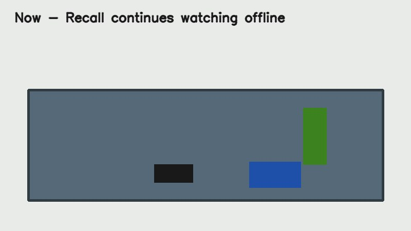

RECALL
EDGE VISUAL MEMORY
MISSION
MODALIX // ROOM 01
CONNECTING
LOCAL ONLY
⚙
SEGMENTATION
0.0 FPS
POSE
0.0 FPS
OBJECT INDEX
0
VLM CALLS
0
MEDIAN RESPONSE
0 MS
SPEECH SYSTEM
STANDBY
RESIDENT MODEL
WAITING FOR LINK
01
LIVE PERCEPTION
ACQUIRING

OPTICAL LINK
CAMERA 01
WAITING FOR VIDEO TRANSPORT
CAM 01 // 640x480
00:00:00 UTC
03
OBJECT INDEX
0 OBJECTS
04
EVENT LOG
VIEW ALL ←
CONNECTION
LINK CONFIGURATION
×
RECALL API
INSIGHT VIEWER
APPLY CONNECTION